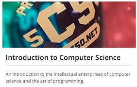

Technology "Basics"
Comptia A+
Comptia's A+ Certification was my jumping off point. Mike Meyers' A+ Exam Guide was one of the most well written books I've ever read.
Linux System Administration

The Linux Foundation's LFS101 course on EDX.ORG was the first really deep dive into a specific technology.
Networking
Comptia Network+
After having read all of Mike Meyers' A+ Exam Guide, and having enjoyed reading it thouroughly; I turned back to him for Comptia's Network+ Certification.
CCENT/CCNA
Let's just say I really enjoyed learning more about networking. Maybe it's the mathmatical, logical and protocol based form of communication that every dork dreams about when he wishes he could talk to girls!! This intro into the world of everything networking was by far and large the deepest down the rabbit hole I had been, and it was fantastic!
Coding
Edx.org/Harvard's CS50
By now you get the idea right??? I feel like I want to learn more about computing and computer science---read, HOW AWESOME IS THIS!!! PROGRAMMING AND THE HARVARD!!!!
LaunchCode
Ok, let's get to CSS!